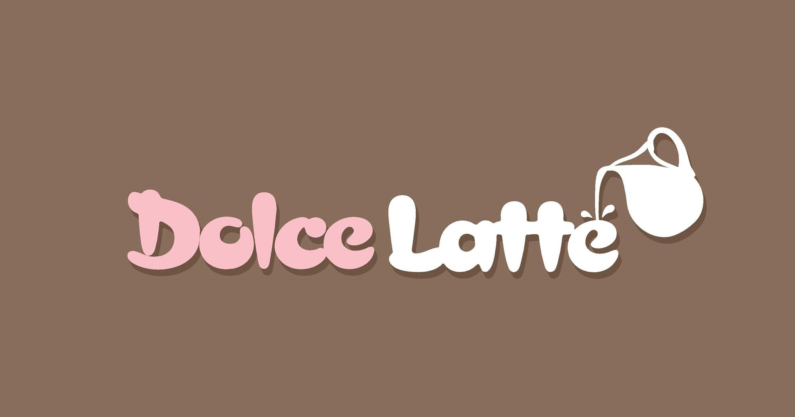
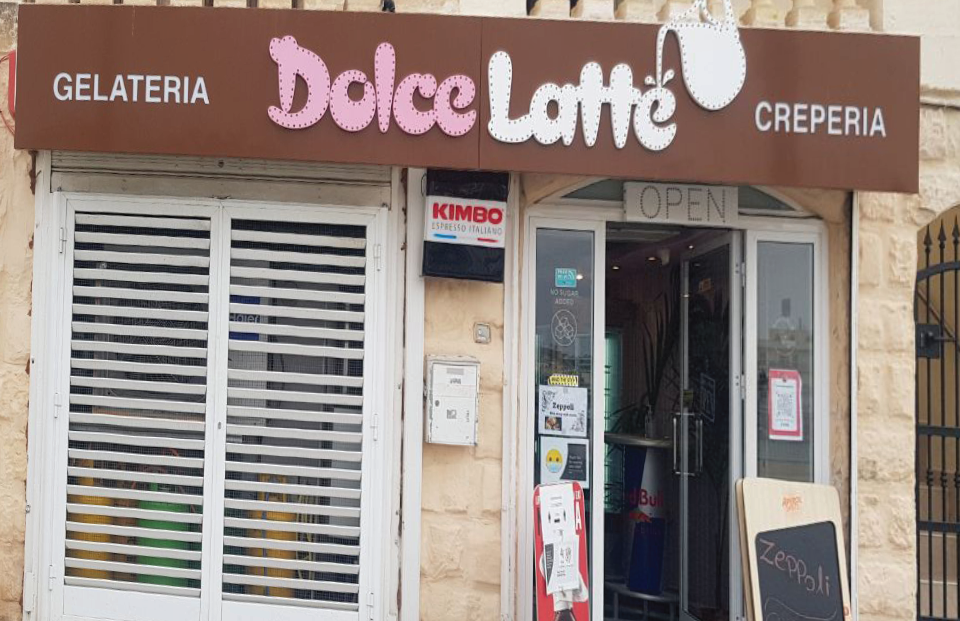
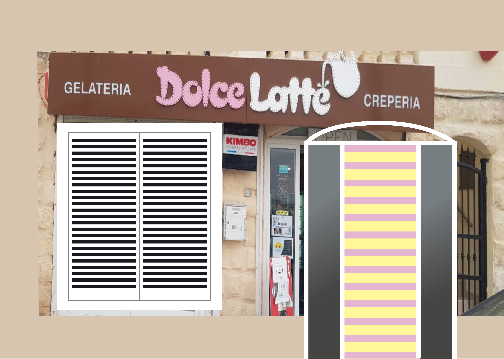

Dolce Latte Marketing Designs
Exploring Digital Media Assignment
The purpose of the Exploring Digital Media unit is to encourage students to experiment with the media available for digital design, such as Adobe Photoshop and Illustrator. For the Adobe Illustrator part of this unit, us students were required to create various vector designs that were associated with a shop in a chosen location. My chosen area was my home town because it had beautiful attractions and one of the best crêperies in Malta.
The first assignment was to recreate the façade of the shop. It was difficult to capture this as Dolce Latte is located in a busy area with cars parked in front of it, so I used Adobe Photoshop first to warp the perspective of the image that I took. Then, I transformed the photo onto Adobe Illustrator.
On Adobe Illustrator, I simplified the windows and interior by making use of geometric shapes to create a generic window effect. I decided to replace the interior of the shop with a design similar to the interior's wallpaper, which consists of pale pink and yellow stripes.
I included the menu board that is featured in the photo to incorporate the style and identity of the shop.
Recreating the Dolce Latte logo sign was not challenging as it was discovered that the typeface already exists. The website https://www.myfonts.com/pages/whatthefont/ served to be helpful. Unfortunately, the typeface couldn't be downloaded. Therefore, for the purpose of this assignment, I took a screenshot and traced it on Adobe Illustrator. I then arranged some of the strokes to replicate the exact lettering that Dolce Latte uses.

After that was done, I simply traced the milk jar and used the Helvetica typeface that Dolce Latte uses on their sign. Then, I image traced a stock photo of a plant and added it to the design as I noticed that the shop has some plants inside. This plant served as a source for balance in the design due to the large door.

For this assignment, it was also required to create a vector poster and business card. Regarding the poster, I kept the pastel-like colours and added a melting ice-cream effect and image-traced some of Dolce Latte's most popular dessert options. For the latter, I again kept the pastel colours and was inspired by other ice-cream shop business cards.

Good effort by Alexia to explain the uses of digital media in an art and design context and understood the use of appropriate technical specifications of digital 2D software including screen resolution, colour profile, and colour modes.
Alexia developed raster and vector based designs effectively whilst experimenting with the software and finalise editorial pieces as part of the research.
The work chosen was adeqaute and the process was discussed and evaluated.